← 返回阅读库 · 原论文目录
论文讲解阅读文档 · 机器人学 · v139
Stabilizing Deep Q-Learning with ConvNets and Vision Transformers under Data Augmentation
视频时长 00:03:55；讲解文字 1,883 字符；提取讲解画面 11 张。按视频原顺序阅读，每段文字保留时间戳。
文字来自整段视频的自动语音转写，按自然停顿分段，并与 PPT / 论文页面 / 演示画面对齐。未将讲解压缩为摘要；术语、数字和口述公式请结合画面及原论文核对。 阅读稿已校正规范部分明确术语误识别；原始逐字稿和每处修改记录另行保留。
讲解画面为源视频截图（640×360），不是可编辑 PPT 文件。全片按每秒 2 帧扫描内容变化，逐步展开页保留；连续动画保留代表画面。清晰度受源视频限制。
下载完整资料包 · 含离线 HTML、PDF、Word、全部 PPT 画面和字幕。
原论文与材料
Stabilizing Deep Q-Learning with ConvNets and Vision Transformers under Data Augmentation · 下载完整 PDF（24 页）
按时间阅读
00:00:00–00:00:21 · 画面 001
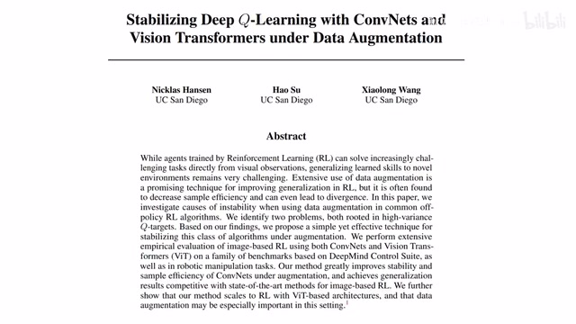
00:00:00–00:00:21 · 画面 001大家好啊，今天我们来迅速介绍一篇工作，Stabilizing Deep Q-Learning with Convolutional Neural Networks and Vision Transformers and Data Augmentation。那这篇论文呢，主要就是研究了我们这些 Q-Learning Based 这些 Reinforcement Learning 的方法，它在加上这个 Data Augmentation 之后为什么不稳定啊？我们去怎么样克服它这个不稳定的这个问题？那么首先来看为什么它们会不那么稳定呢？
00:00:21–00:01:10 · 画面 002
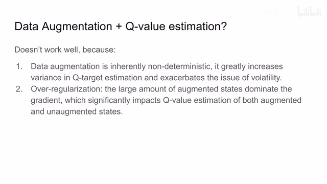
00:00:21–00:01:10 · 画面 002作者认为，那这里主要有两个原因。首先第一个，data augmentation 实在是太过于这个随机了，它极大的增加了我们在这个 q value 的 estimation 过程中的这个 variance。它就相当于我们在计算这个 target 的时候呢，它就是不那么稳定的嘛。那么其次呢，就是这个 over augmentation 的这个问题。这里呢，作者认为说我们这个 augmented 这个 state 它呢距离我们原本的 state 实在距离太过遥远了，甚至有很多时候它比我们不同的 state 之间它距离还要远。这就导致一个问题，我们在计算 gradient 的时候，它的 gradient 里面的大部分都是这种很难以调和的这种 data augmentation 之间所带来的差异。
所以说，它并不能够帮助我们很好的去学到一个 Q-value。那么基于以上的两点原因，Data Augmentation 和 Q-value based reinforcement learning 的方法结合并不是说特别的顺利，主要是不太稳定，一个是从 target 方向，另一个是从训练过程 gradient 产生的方向来得出的这两个原因。那么怎么克服的这个问题？作者这里有非常直接的方法就是
00:01:10–00:01:11 · 画面 003
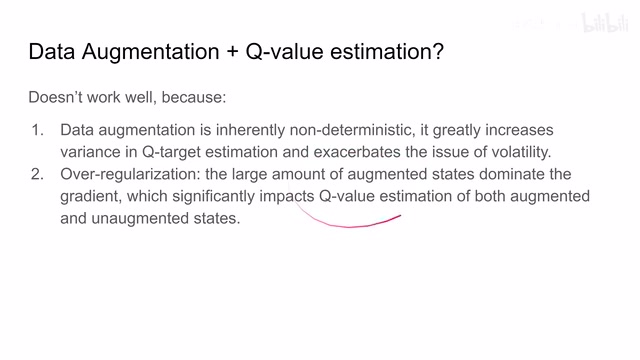
00:01:10–00:01:11 · 画面 00300:01:11–00:01:31 · 画面 004
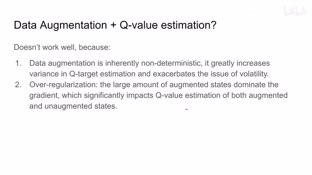
00:01:11–00:01:31 · 画面 00400:01:31–00:01:40 · 画面 005
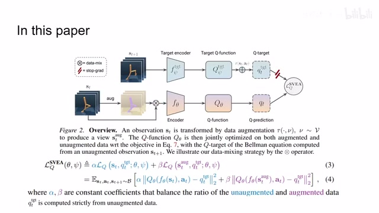
00:01:31–00:01:40 · 画面 005既然 Data Augmentation 它做出来有这么大的缺陷，那就不做了。首先我们看到这里作者提供的一个非常简单的结构。
00:01:40–00:01:41 · 画面 006
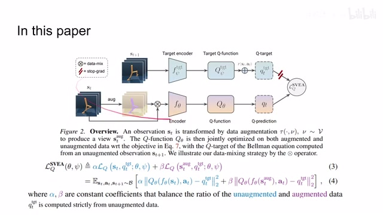
00:01:40–00:01:41 · 画面 00600:01:41–00:03:07 · 画面 007
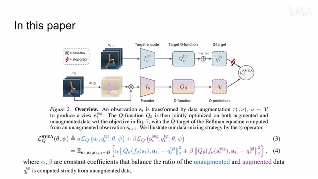
00:01:41–00:03:07 · 画面 007我们有 target network，我们有 online network。对于 target network 来说，我们只向他输入原始的未做 augmentation 的图像，可以看到是这样子，然后他给我们一个 q target value。而对于我们的 online network，我们还是想要摊一点 augmentation，但又不能摊全。所以可以看到他这里一部分是把我们的原始的 state 和增广过 state 一起结合起来送到我们这个 online 这个 network 里面，然后呢再进行训练。那具体到 loss ，我们看到这一部分蓝色的 alpha 前面是个系数啊。那这一部分呢，是有原始的 state 对比原始的 target 那产生的。那这一部分紫色的部分呢，是由这个 augmented state 然后呢还有我们这个 target 他们结合产生的，他前面这个系数呢是 beta。
那么通过调控 alpha 和 beta 的比例呢，我们就克服了这个这个 augmented 这个 state 它 dominate 这个 gradient 在 gradient 中占大部分的这么一个问题。同时呢，我们因为是把未增广的这个 state 送到这个 target network 里面，所以呢，我们的 target 应该是相对稳定的。那么这样一通操作呢，就规避了作者提出的前面两个这个原因。
当然这个改动也是一个非常简单的改动，理论上你可以把它放到任何 q value base 的 reinforcement learning 这些方法当中。那么当然我们的 encoder 不仅可以是 cnn ，还可以是 vision transformer，怎么说呢，这算是增加了一点工作量吧。那么在最后的结果的部分，作者汇报了像 DeepMind Control 还有 robotic manipulation
00:03:07–00:03:41 · 画面 008
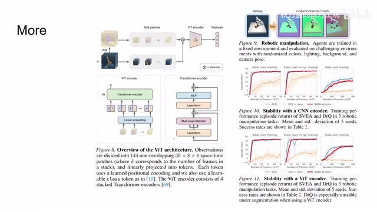
00:03:07–00:03:41 · 画面 008对比一看，可能确实是增加了一部分稳定性，但是作者使这个 trick 实在是太过简单了，你也不能指望说它有巨大的性能的提升。作者在原文中还汇报了很多的结果，包括附录中也有很多的实验，非常推荐到原文查看。那么这篇文章总体来说，提供了一个能够自圆其说的这么一套逻辑，首先是这两个原因。
00:03:41–00:03:43 · 画面 009
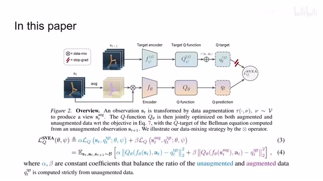
00:03:41–00:03:43 · 画面 00900:03:43–00:03:55 · 画面 010
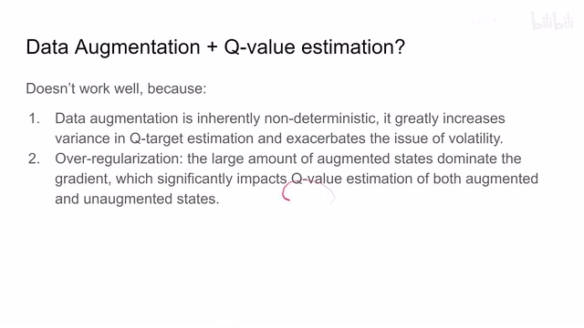
00:03:43–00:03:55 · 画面 010对应地给出了相应的解法，虽然是一个非常简单的解法。那么总的来说呢，这篇文章呢还是挺有意思的一个小文章。那么感谢您的收看，再见。
00:03:55–00:03:55 · 画面 011
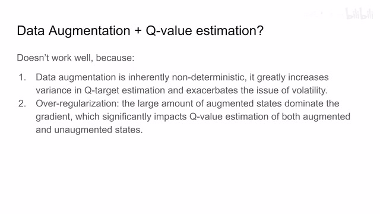
00:03:55–00:03:55 · 画面 011转写与来源说明 · 0 个自动复核提示
保留 11 个原始语音片段，0 个片段触发自动复核提示。提示仅用于定位可能的术语、重复或识别问题，不等于已确认错误。
讲解画面为源视频截图（640×360），不是可编辑 PPT 文件。全片按每秒 2 帧扫描内容变化，逐步展开页保留；连续动画保留代表画面。清晰度受源视频限制。
原视频：paper/合集_2026-10-16_机器人学/[论文速览]Stabilizing Deep Q-Learning with ConvNets and ViT...[2107.00644].mp4
SHA-256：04946e1b581cef6f048732da016f21c0eddfd6d0b67a999c40459c2936737e23
全文按视频语音与画面制作。原论文可从上方链接下载；完整资料包保留全文、原始逐字稿、字幕和校对记录。